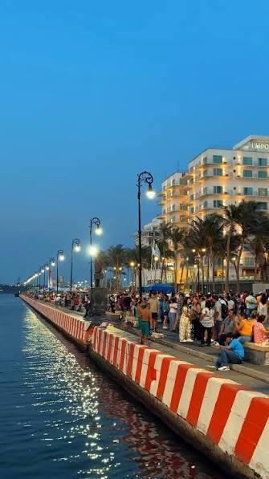
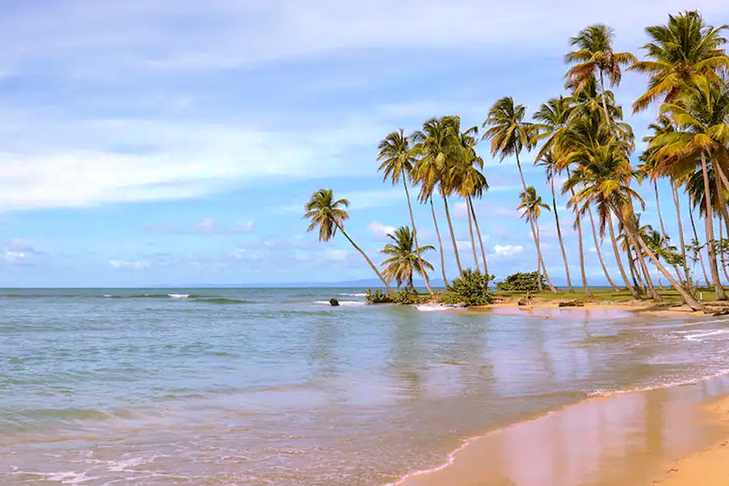
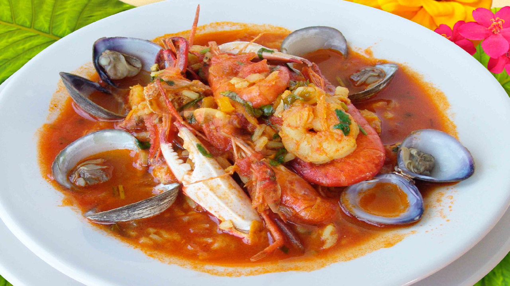
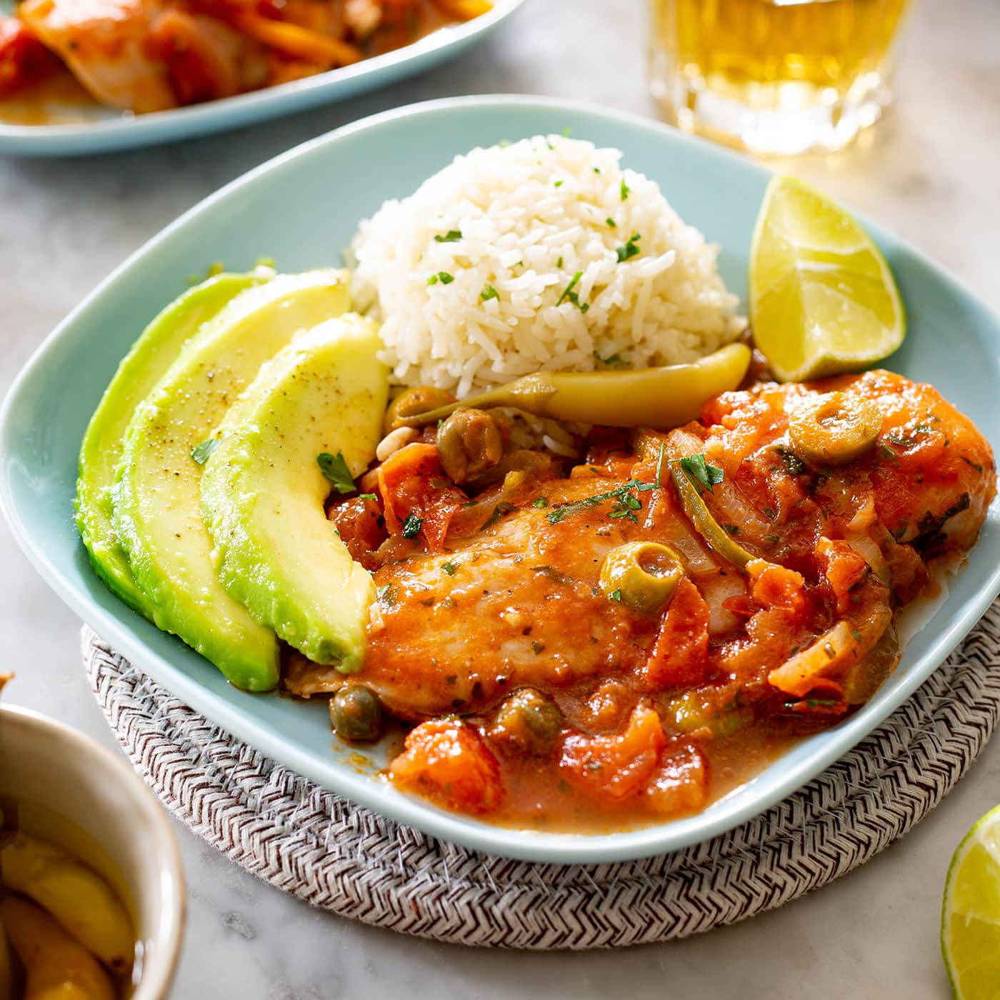
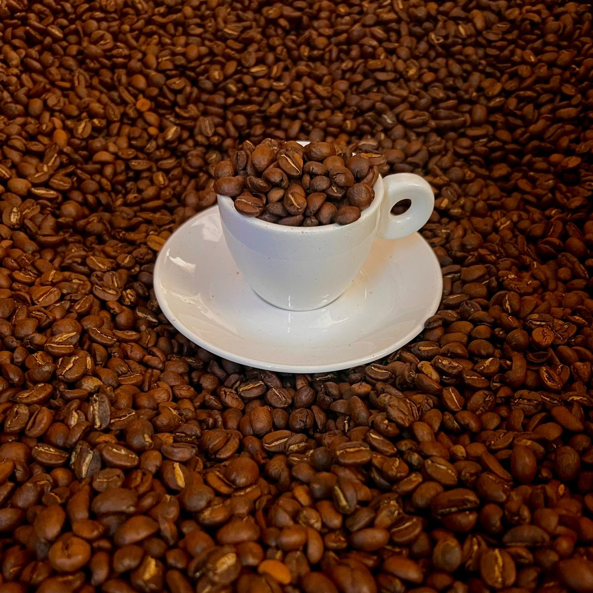

Lugares Turísticos


Castillo de San Juan de Ulúa, Malecón, Xalapa, Costa Esmeralda y los Tuxtlas.
Veracruz fue el primer puerto fundado por los españoles en territorio mexicano (1519). Su puerto ha sido clave para el comercio y la cultura del país. Aquí se vivieron momentos decisivos como la Batalla de Puebla y la defensa de la soberanía nacional.
El traje jarocho refleja la alegría: blusa blanca con bordados, falda amplia y huaraches. Los hombres visten guayabera blanca y sombrero de palma.



Arroz a la tumbada, pescado a la veracruzana, café de Coatepec y el famoso jarochito de la leche.


Castillo de San Juan de Ulúa, Malecón, Xalapa, Costa Esmeralda y los Tuxtlas.